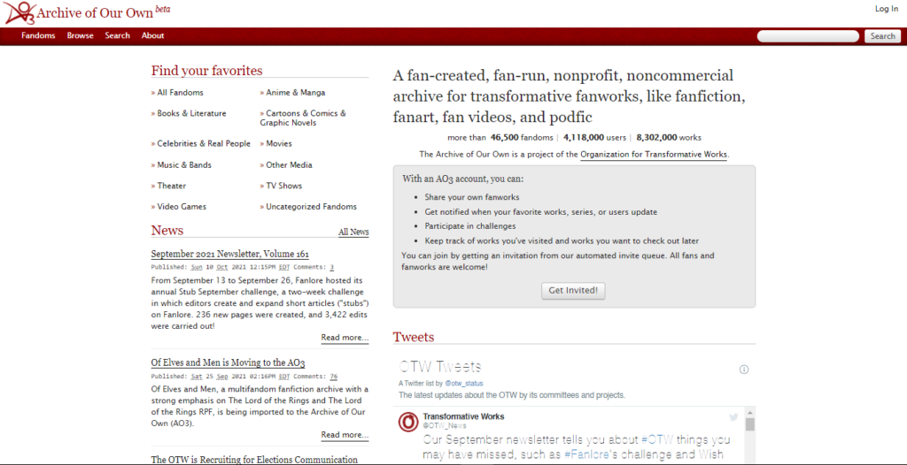
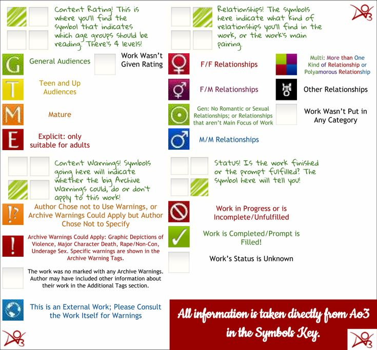
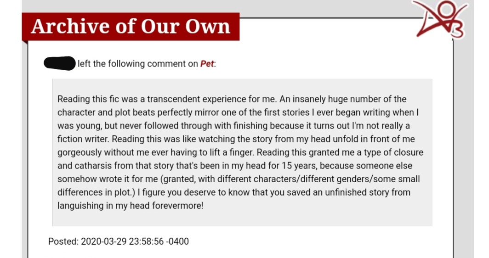

A Deep Dive into the Internet’s Most Beloved Fanfiction Archive
Archive of Our Own, commonly known as AO3, is one of the largest and most influential fanfiction platforms in the world. It is a non-profit, open-source website where fans can create, share, and preserve stories based on their favorite media—from books and anime to movies, video games, and even real-life figures.
What sets AO3 apart is its philosophy: it was built by fans, for fans, with the explicit goal of protecting creative freedom. Unlike commercial platforms, AO3 does not rely on advertising, algorithms, or corporate oversight. Instead, it is sustained entirely by donations and volunteer work, ensuring that the community itself shapes the site’s future.
AO3 has become more than just an archive—it is a cultural hub where millions of readers and writers interact, discover new fandoms, and celebrate creativity without barriers. Its design emphasizes inclusivity, accessibility, and the preservation of fan culture for generations to come.
Visit the official website: Go to AO3

AO3 didn’t just appear randomly—it was born out of frustration and passion. In the mid-2000s, many fanfiction platforms began removing content or placing restrictions, especially on mature or LGBTQ+ stories.
In response, fans wanted a space where their work wouldn’t be deleted or controlled by corporations. This led to the creation of the Organization for Transformative Works (OTW) in 2008, a nonprofit group dedicated to protecting fan culture and ensuring that fanworks were recognized as legitimate creative expression.
AO3 was officially launched in 2009 as a platform "by fans, for fans," with the goal of preserving fanworks and giving creators full control over their content. Its mission was not only to host stories but also to safeguard fandom history and provide a safe, inclusive space for diverse voices.

AO3 was co-founded by fans and writers deeply embedded in fandom culture, including Naomi Novik, Francesca Coppa, and Rebecca Tushnet. Each of them brought unique expertise: Novik as a bestselling author, Coppa as a media scholar, and Tushnet as a legal expert specializing in intellectual property and fan rights.
Their vision was to build a platform that would never be subject to corporate censorship or profit-driven decisions. They wanted a site that respected fan creativity, protected transformative works under fair use, and gave fans ownership of their contributions.
What makes AO3 unique is that it is largely built and maintained by volunteers. Hundreds of contributors help develop the site, manage content, and organize its massive tagging system. This grassroots, community-driven approach ensures AO3 remains independent and aligned with the values of its users.

Since its launch in 2009, AO3 has grown into one of the largest fanfiction archives ever created, hosting millions of works across tens of thousands of fandoms. Its scale and diversity make it a living record of fan creativity, documenting everything from niche fandoms to global pop culture phenomena.
The platform has also become a symbol of resistance against censorship and commercialization. By prioritizing user control and creative freedom, AO3 has empowered marginalized voices, particularly LGBTQ+ communities, who often found their works restricted or erased on other platforms.
AO3’s influence extends beyond fandom. In 2019, it won a prestigious Hugo Award for Best Related Work, marking a historic moment where fanfiction was recognized alongside professional literature. This achievement validated the cultural significance of fan-created works and highlighted the importance of preserving them.
Today, AO3 continues to inspire new generations of fans, scholars, and creators. It is frequently cited in academic research, referenced in mainstream media, and celebrated as a model of community-driven digital infrastructure.
| Category | Count |
|---|---|
| Works | 12+ million (As of 16th, April, 2026) |
| Fandoms | 50,000+ |
| Users | Millions worldwide |
AO3 is funded entirely by donations through the Organization for Transformative Works (OTW)...
Yes, AO3 is completely free and funded by donations.
Yes, anyone with an account can publish works.